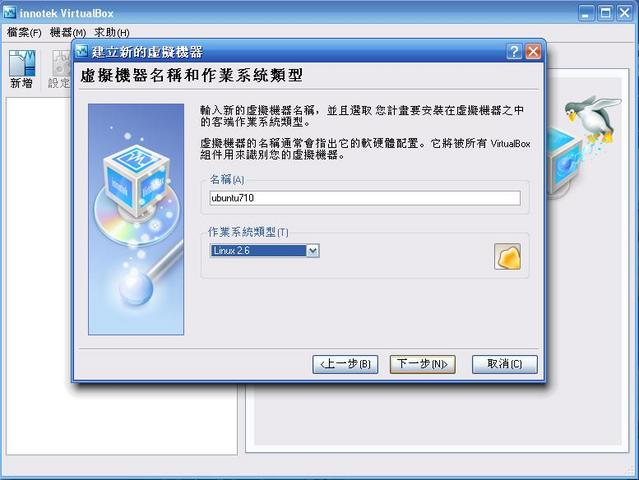
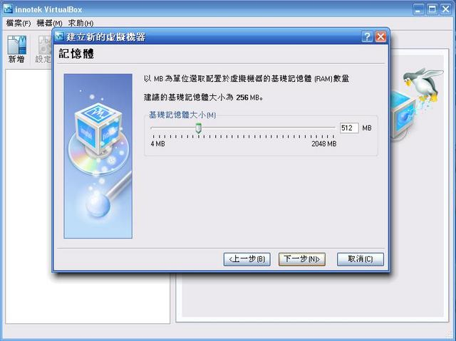
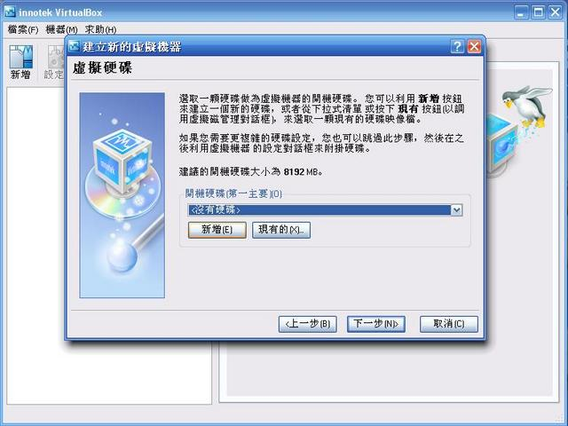
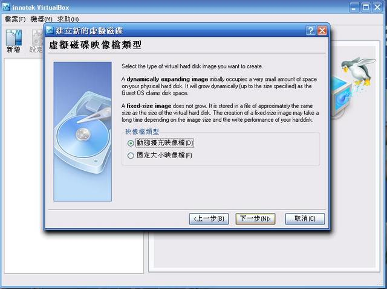
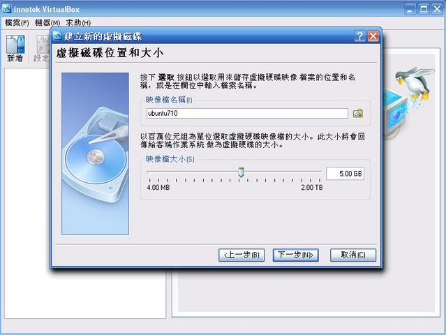
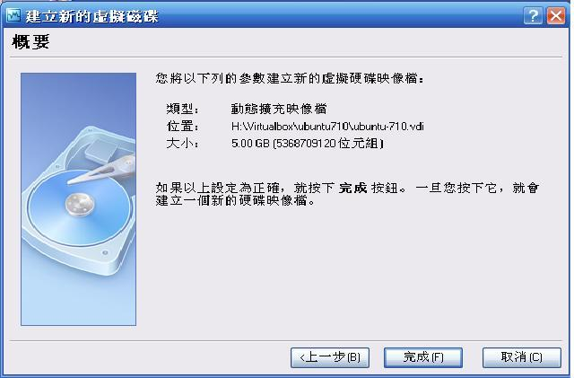
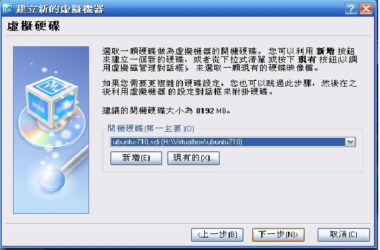
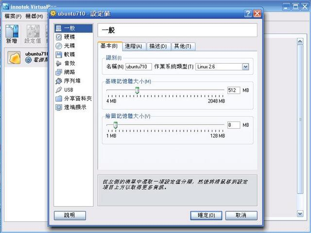
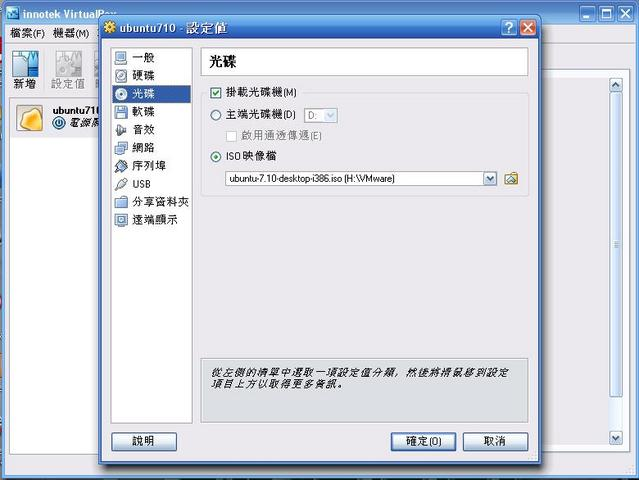
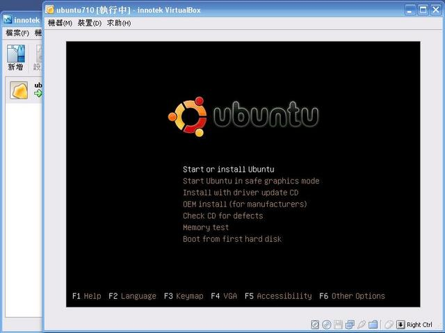

對剛入門的人而言，要在個人電腦上多安裝一個 Linux 作業系統需要相當的決心和勇氣，本次實驗將介紹如何透過 virtual box ，讓初學者能夠直接在 XP 上作整套的系統實驗。
Virtual Box 是一個能夠模擬 X86 平台的 virtual machine ，它可以安裝在多種作業系統上，包含 Linux 、 windows，關於 Virtual Box 的更多資訊可參考 wikipedia [1] 或它們的官網 [2] 。
| [1] | http://en.wikipedia.org/wiki/Virtual_box |
| [2] | http://www.virtualbox.org/ |
請先至 Virtual Box 官網下載區 [3] 下載程式，選擇完平台之後即可開始下載，在安裝完成後也可將 Virtual Box 的語言設定改為中文。
| [3] | http://www.virtualbox.org/wiki/Downloads |
點選「新增」，並設定要模擬的作業系統類型
設定可以使用的記憶體大小（建議至少 512 MB）
在建立新的虛擬硬碟處點選「新增」，進入設定虛擬硬碟的畫面
在建立虛擬硬碟時，選擇「動態擴充映像檔」，以方便日後硬碟大小的擴充
設定「映像檔」名稱和初始大小（整套系統實驗大約需要 4.5G 的硬碟空間，你也可以先分出 5G 以上的硬碟大小來給系統實驗使用）
按下「完成」結束虛擬硬碟的設定
選擇剛才新增的虛擬硬碟作為開機硬碟，即可完成虛擬機器的設定
在剛新增的虛擬機器上按下滑鼠右鍵，就可以進行設定
在「光碟」選項中，選擇「掛載光碟機」，並將 Ubuntu 7.10 的 iso 檔填入「iso映像檔欄位中」（如果你已經有 Ubuntu 7.10 的 live CD ，可以選擇「主端光碟機」）
點選「啟動」，即可開始使用虛擬機器
本文件以 reStructuredText 格式編撰，並可使用 docutils 工具轉換成 HTML 或 LaTeX 各類格式。